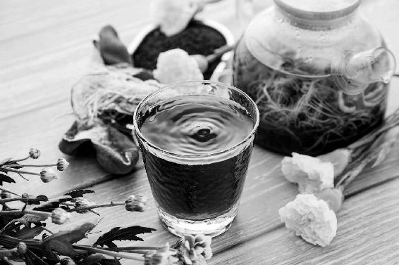

不管是感冒，还是感冒引起的肺炎，一般都是从受寒开始的，一开始的症状是怕冷、头痛或浑身酸痛、嗓子痒、鼻涕清稀、痰清或白，这时可以用葱姜陈皮水。如果咳嗽重而且痰多，可以加蜂蜜大蒜水。

流感和普通感冒是不一样的。流感是由呼吸道病毒引起的，传染性很强。
在历史上，流感也曾是让人们十分恐惧的疫病，死亡的人数众多。1918年，甲流（甲型H1N1流感病毒）在半年内造成全球5 000万人死亡。
1957年，“亚洲流感”在中国首发，仅北京市就有50%以上的人感染，迫使工厂停工、学校停课，之后席卷全球，至少100万人死亡。
直到现在，人类也没有征服流感病毒，只是我们对它产生了一定的耐受力，死亡率降低了，所以流感病毒就没有让大家感到那么可怕了。
流感病毒有不同种类，还不停变异，所以我们对它还是要高度防范。得了流感不可怕，可怕的是引起并发症（常见的是肺炎），就比较危险，还有的会留下后遗症。
以下五种人要重点防范流感引起并发症：
·5岁以下儿童
·65岁以上老年人
·有慢性病（心脑血管疾病、糖尿病等）的人
·肥胖人群
·孕妇
流感与感冒不同的是，容易一上来就突然发热，而且烧得比较高。比如老年人感冒一般不发热，如果发热就要注意是不是流感。
老年人发热可不是小事，不好好处理就容易引起并发症。即使强行用药物退热，有时也不免要咳一两个星期。这种情况用鱼腥草调理比较好。
得了流感，一般一个星期可以自愈，没有必要过度治疗。患者除了接受正规治疗之外，还可以在家用简单的方法调理不适。
流感和感冒是两种病，怎么区别呢？
患者感冒初期一般是打喷嚏、鼻塞或流鼻涕较明显，不一定发热。而流感患者一般鼻部症状不明显，而是一上来就发热，并伴有浑身酸痛、咽喉不适、咳嗽。
因此，突然发热并且咽喉不适可以用鱼腥草，嗓子很痛可以加罗汉果或牛蒡。
2018年国家卫健委发布的最新《流行性感冒诊疗方案》，药方中就有鱼腥草。2020年国家卫健委发布的《新冠肺炎中医诊疗手册》，药方中也有鱼腥草。
我们平时在家里也可以用鱼腥草辅助调理和预防流感。
做法一：抓一大把鱼腥草，大约30克，泡水或煮水喝。煮水煮得浓一点，效果更好。
如果痰多咳嗽，加1〜2个罗汉果（压破再煮）；咳嗽频繁可以加梨皮、萝卜皮；如果嗓子很疼，可加上牛蒡（鲜品用三分之一根，干品用40克）。
在流感初起时，马上喝一些鱼腥草水消炎，可以起到退热的作用。
做法二：用1 000克到2 000克新鲜鱼腥草，榨汁喝。
脾胃虚寒者可以加两三片生姜一起榨。
如果嗓子很疼，可以加上半根牛蒡一起榨汁。此时不要加生姜。
老年人和儿童也可以用鱼腥草调理。一般的退热药和抗生素药，对于老年人和儿童来说副作用比较大。而鱼腥草是食物，性质平和，非常安全。
一位七十多岁的男性，夏天吃过晚饭后突然发热，38℃以上。他并没有什么别的症状，只是嗓子有些难受。我的三姨让他用鱼腥草煮水，只喝了一次，当晚就退热了，第二天起来就没事了。
（新冠肺炎疫情期间）我老公嗓子肿，喝水都喝不了。我给他煮了鱼腥草、罗汉果、牛蒡水，喝了两天，好多了。
——顺时生活会14群读者
从大年三十起我就感觉乏力，喉咙有点痒，正逢新冠肺炎疫情期间，立即去市场买了新鲜的鱼腥草，每日凉拌吃，吃完以后明显感觉有好转，但没有彻底解决。想到最近熬夜比较频繁，加了罗汉果和鱼腥草一起熬水喝，每日就这样坚持喝，真的喝好了。
——响响（重庆）
允斌点评：以前我的经验是，用鲜品榨汁消炎效果会更强一些。但近几年我发现，由于现在的新鲜鱼腥草都是种植的，种植方法不同（比如施化肥等），消炎效果会有差异。有些鲜品的效果反而不如野生鱼腥草的干品。大家在用鲜品时，为了保险起见，可以增加鱼腥草干品煮水。
董会问：老师，孕妇可以喝鱼腥草罗汉果水吗？怀孕八个月，主要是嗓子疼得厉害，偶尔低烧，我这儿买不到蚕沙、竹茹，发热38℃，只好去医院。什么药也不能吃，只能扛着。盼复，谢谢。
允斌答：嗓子疼的话可以喝。38℃还用不到蚕沙竹茹陈皮水。
感冒时，我们不仅要辨识风寒和风热，还要注意，感冒是可能转化的。你感冒，调理了两三天还没有完全好，还继续用同一个方法调理，有可能是不对的。你要随时观察自己身体的表现。
不管是感冒，还是感冒引起的肺炎，一般都是从受寒开始的，一开始的症状是怕冷、头痛或浑身酸痛、嗓子痒、鼻涕清稀、痰清或白，这时可以用葱姜陈皮水。如果咳嗽重而且痰多，可以加蜂蜜大蒜水。
感冒一两天后，有些人（特别是年轻人）会开始感觉嗓子很痛，痰也变黄，那就说明风寒感冒已经转成风热感冒了。这时可以用鱼腥草来消炎，痰多加罗汉果，咳嗽频繁可以加梨皮、萝卜皮，咽喉肿痛可以加牛蒡。
风寒化热时通常会发高烧。如果发高烧到了39℃以上，那我们就可以不管风寒还是风热，因为病已经入里了，已经不是纯粹的外感，它深入到我们身体内部了，这时候就要用蚕沙竹茹陈皮水（退热茶）。
注意：如果是流感，与感冒不同的是，可能一上来就发热，并且伴有咽喉不适，此时可以直接用鱼腥草。
受凉以后，感觉怕冷，有点头痛、流清鼻涕，也就是我们通常所说的伤风，这时候马上喝姜汤就可以解决。
煮姜汤要注意：姜要去皮，这样才能起到发汗的效果。生姜不要久煮，要在水开后下锅，煮3分钟就好。
煮的时间长了，姜发散风寒的效果就差了。凡是调治感冒、散风寒，姜煮的时间要短。如果是要暖胃、祛胃寒，姜就可以多煮一会儿。
如果一开始感冒没有得到重视，也没能及时调理，就很容易发展成重感冒。这时的表现是浑身酸痛、鼻塞、流鼻涕、怕冷、不出汗，还有一点点低烧、咳嗽，但嗓子不疼，这就是重感冒了。
在这种情况下，我们要用葱姜陈皮水。
原料：去皮生姜3片，葱白连须3根，陈皮1个。
做法：1.陈皮要先煮，葱、姜之后下锅。把陈皮跟冷水一起下锅。煮开后，再放入生姜、葱白连须，煮3分钟起锅。
2.趁热喝，如果能吃得下去，可以把葱白和葱须一起吃掉，效果更好。想吃姜的人，可以连姜片一起吃。 3.平时有胃热的人，不要把姜片吃掉，以免上火。陈皮的味道有点苦、有点辣，就不要吃了。喝了葱姜陈皮水，人会出汗。记住，这时候一定不能受风，否则寒气又会进去。
允斌叮嘱：葱姜陈皮水只能喝一两次，最多三次，出了汗，散了寒，感觉好转了，就可以了。剩下的事情，就是多休息，吃点白粥配泡菜，用清淡的饮食慢慢调养，让身体自己恢复。不要为了巩固疗效一直喝，造成出汗过多，没有必要。
如果您出门在外，无法做葱姜陈皮水来喝，您也可以去药店买一种中成药，叫九味羌活丸。九味羌活丸对于风寒感冒、重感冒引起的浑身酸痛，治疗效果也是非常好的。
这次感冒遇上“大姨妈”，刚开始时感觉后背发冷，打喷嚏，流清涕，时常有低热，煮了三次葱姜陈皮水，基本好了。
——小芳
今天早晨我先生有点伤风，我赶紧按照老师的食方，煮了姜（去皮）加3根葱须，又加了陈皮，一碗喝下去，停了一会儿，我又给他的大椎穴贴了暖灸贴，睡了午觉后感觉一下子好多了。
——梅
昨天下午在办公室头有点痛、发冷，还打喷嚏，下班回家后立马煮了去皮姜汤，睡觉前又煮了葱姜陈皮水，喝了一碗，全身立马热乎乎的，今天早起居然好了，太神奇了！
——顺时生活会4群读者
由于感冒当天没来得及煮葱姜陈皮水，就服了风寒感冒颗粒，效果不大，不发汗，仍然怕冷，流清鼻涕，到第二天就煮了一次葱姜陈皮水，停服了风寒感冒颗粒，今天基本上好了，不流鼻涕也不怕冷了。
——微笑以后
如果感冒时，有一点低烧、头晕，觉得肠胃不适，比如恶心、呕吐或有点拉肚子，用藿香正气水就可以了。
藿香正气水含有乙醇，如果不喜欢，我家有一个食疗方可以代替，我给这个方子取的名字是“芫香正气水”。它和藿香正气水的功效是差不多的，但它的味道更好一点，小朋友是可以接受的。
偏胃肠型感冒的人，也可以用这个方子。
原料：香菜（芫荽）3〜5棵，鲜橘皮或川陈皮1个，带皮生姜3片。
做法：1.把香菜根切下来，单独切碎，香菜叶子也切碎。
2.锅里放水，先把陈皮下锅煮，水开后放香菜根、姜片，煮5分钟，再把香菜叶子撒进去，关火起锅。
3.喝煮好的汤水，并把香菜吃掉。
4.如果有的人同时还有鼻塞、流鼻涕的情况，可以在这个药茶里放上3根葱白（连须）一起煮。
适宜人群：全家老幼都可以喝。
听老师的话，用两个鲜橘皮、三片姜、一大棵香菜，煮了一大碗，刚喝下，满头大汗，鼻子也通了。
——*-*
（新冠肺炎疫情）特殊时期，家里也没有药材。家人肠胃感冒了，乏力、发热、头晕、全身痛，喝了两天香菜陈皮生姜水，症状都消失了，气也通了。
——初灵
cici问：最近在社区门口值守，回家后经常浑身发冷，37℃左右，感觉有点低烧，好了之后出去上班又有点发烧，是太紧张了？不知是否需要警惕，还是注意什么？
允斌答：判断一下是否受风受寒，试试用香菜陈皮姜水。
如果感冒后发热而且嗓子疼，可以喝鱼腥草水。
做法：抓一大把鱼腥草大约30克，泡水或煮水喝。煮水煮得浓一点，效果更好。
如果痰多咳嗽，加1〜2 个罗汉果（压破再煮）；咳嗽频繁可以加梨皮、萝卜皮；如果嗓子很疼，可加上牛蒡（鲜品用三分之一根，干品用40 克）。
上个月感冒，扁桃体发炎，连着三天挂水、吃药，炎症都未消除，一直有痛感，大概持续了二十天。无意中看到老师的文章，用鱼腥草煮水喝了三天，炎症没了，感冒好了，太神奇了。
——喜沁207
爸爸深夜回家吹了风，咳嗽得很厉害，到了晚上更严重。我记得老师说过罗汉果和鱼腥草煮水可以治疗，马上煮来给爸爸喝，当天夜里就不咳嗽了。白天又煮了梨皮水，两天完全治愈。很感谢老师。
——生长期
前阵子感冒还没彻底好，稍微受点风又感冒了。觉得自己阴虚火旺，最近一周都在吃银耳羹，隔天喝甘草陈皮梅子汤，中午、下午穿插喝鱼腥草茶，晚上用吴茱萸粉敷脚心（《吃法决定活法》的书中“引火下行”的保健方法）。中间有两天吃了辣的，嗓子有点不舒服，我做了凉拌西红柿撒白糖（《回家吃饭的智慧》的书中“风热感冒初起咽喉痛”的食方），吃完后立竿见影！
——Nancy妈妈
天气忽冷忽热，既受热又受寒时，如果觉得自己各种感冒症状都有一点，分辨不清楚风寒风热，或者是否是流感，可以先喝一碗葱花豆豉汤。
葱花豆豉汤是一个非常好的感冒救急食疗方，在感冒发烧的早期阶段，可以用这个方法通治。
葱和豆豉都有一个“通”的作用。葱能通气，帮助身体散去风邪；豆豉通经络，可以疏通瘀在经络的病气。
原料：葱半根、淡豆豉两大勺（如果没有淡豆豉，用家里普通的豆豉也可以，要先用清水泡洗一下，去掉一些咸味）。
做法：豆豉冷水下锅，煮开几分钟后，加一把葱花起锅。
年前我和小女儿前后感冒了两次，第一次感冒用陈老师的葱姜陈皮水，喝了三次，轻松痊愈。第二次来势凶猛，而且纠缠不休，我躺了两天，因为分不清是哪种感冒，我就用豆豉、葱花煮汤，喝了三大碗，喝白开水（没吃其他食物），第三天基本好了。
——心静如水
原料：蚕沙 30 克，竹茹 30 克，陈皮 30 克。（幼儿可以各减为 10 克。这三味药相对平和，多点也没关系。）
做法：冷水下锅，水开后再煮3分钟。
服法：感冒高烧（成年人发热超过38.5℃，儿童超过39℃）时服用。一般的人喝一次就可以退热。严重的可以喝2〜3次，退热以后就不用再喝了。
适宜人群：幼儿、成人、普通孕妇、高龄老人都可以用。
太小的婴儿，一次喝不了太多药水，最好是少放点水，煮得浓一些，分几次喂，每3个小时喝一次，至烧退为止。
① 成人
我是2009年在陈老师的《回家吃饭的智慧》的书中发现的退热方，当时正值我姐姐发热，我便到附近的中药店抓了这三味药。当晚煮好喝了，第二天一早就退热了。
——YH
② 幼儿
女儿高烧39.7 ℃，用陈老师的一服退热方完全退热了！晚上10点喝一次，午夜1点又喝一次，4点喝第三次，早上7点半烧已经退了！
——李香
流感，三岁半的女儿反复发高烧，第一次尝试用蚕沙、竹茹、陈皮煮水喝，真的退热了，太神奇了。
——肖肖
我家3 岁儿子高烧39 ℃以上（用量是10 克），12 岁女儿高烧39 ℃以上（用量是20 克），很管用。
——云
小儿子拍CT显示急性肺炎已经感染到肺里。昨天下午前后喝了两三碗的蚕沙竹茹陈皮水，半夜发烧39 ℃多，甚至到了40 ℃，昨天下午前后喝了两三碗的蚕沙竹茹陈皮水，其间都没有让他喝退热药。今早小孩睡眠状态都不错，10点多又测了下体温，36.6℃，终于正常。
——读者
我的小孩一直靠这方子退热，用的是各10克。从来不打针吃药，感恩。
——刘娜
我的孩子上学不用请假，有感冒或者发热都是一剂见效，晚上发高烧喝蚕沙竹茹陈皮水，睡一觉，烧就退了。早上起床喝白粥配泡菜，活蹦乱跳地去上学了。
——玉兔
陈允斌老师这个退热方法已经用了六七年，效果非常神奇，推荐给同学和同事的小孩试用了，天然无副作用，真心好用！
——ROSE
我家老公刚开始不相信陈老师的退热方，尽管我们的女儿一直用很有效。直到这次，他自己发热，亲身体验了，才真正从心里信服了。陈老师的方子让大家都受益。
——小花
罗汉果是我们平时调理咽喉问题的好帮手，对于咽喉炎、扁桃体炎、肺热、咳嗽、痰黄等都有很好的效果。
有些职业需要长时间说话，比如教师、主持人，他们往往被慢性咽炎困扰。这种时候治嗓子解决不了根本问题，因为在咽喉部位有肾经通过，话说得太多，就会耗气伤肾；还有的人经常熬夜，也会伤肾，容易得咽喉炎。
这样的情况，罗汉果就可以派上用场，因为它不仅清肺热，还有补肾气的作用，可以使慢性咽炎从病根上得到调理。
有慢性咽炎的人，发作后觉得有点痛；还有一些人话说得太多，经常熬夜，咽喉部位发红、上火。这两种人都可以经常煮罗汉果水来喝。
罗汉果是我家里常备的，因为用处很多。
它是烘干的，所以能保存很久。我曾经做过实验，一盒罗汉果在家里放置了十来年，打开来看，中间的核都变成粉末了，还是没有坏。
原料：罗汉果１个。
做法：压破后煮水40分钟。
功效：调理支气管炎，缓解痰多、咽喉疼痛的现象，清肺化痰，润肠通便，祛除口气。
记住，我们煮罗汉果的时候，要把它压破，连皮带核一起煮，这样效果才好。罗汉果一定要连皮带核一起用，它的果皮作用于肺和胃，果核作用于肾，要留下核才能补肾气。
我按照老师的方法给老公煮了一个罗汉果，没想到两天喝了两杯就治好了他持续一个月的咳嗽。
——王娜
咽喉肿痛的时候，用牛蒡是非常好的。牛蒡是一种蔬菜，长长的，有点像山药。
当扁桃体发炎红肿时，会疼得非常厉害，可以把新鲜的牛蒡洗刷干净，不用去皮，切成小块，放在榨汁机里加点水打成汁，直接喝，就有消肿的功效。如果没有榨汁机，直接吃也是可以的。
这个方法我曾经介绍给一些电视台主持人，他们在遇到咽喉肿痛影响录节目时，就用来急救，能快速解决问题。
一位年轻男主持跟我说：“老师，我叫我妈妈按您说的榨牛蒡汁给我喝，喝的时候觉得不好喝，喝下去之后，觉得效果真好！”
如果不喜欢生牛蒡的味道，可以加点蜂蜜。或者先试试喝牛蒡茶，也有一定效果。
我是先流清涕（白色），后流浓涕，后喉咙痛（黄痰），最后咽痒咳嗽。治愈顺序：鱼腥草（消炎），牛蒡茶（治喉咙痛），按摩鼻梁、眉心至额发际线（消清涕），对左手掌按摩，按食指→中指→无名指→小指四指指缝（按摩一遍，咽痒咳嗽立消）。感冒了，不论白痰黄痰，每日喝牛蒡茶 + 按摩，每日喝排便、排尿、排屁，感冒不药而愈。
——红糖
昨天下午开始喉咙发紧，估计是感冒了，这次试了试牛蒡加罗汉果，太妙了，一杯就基本 OK 啦。
——心怡
一直跟着陈老师顺时生活，最佩服老师用极简的食材调理大问题。
——扑克
Xl问：都说喉咙疼喝板蓝根，不喝还好，喝了板蓝根冲剂反而疼得更严重了，我试过两次以后再也不买板蓝根了。这是为什么呢？
允斌答① 扁桃体发炎引起的咽痛才适合喝；② 药品本身的质量不一样；③ 喉咙痛，用牛蒡调理效果也很好。
痰的颜色不同，说明病因不同，祛除的方法也不一样。
如果是白痰，痰比较多，这是体内有寒，可以用蜂蜜大蒜水调理。
做法：拿一整个大蒜，把它切碎，装在一个小小的碗里，再加一点儿蜂蜜，上锅蒸8分钟，蒸好了以后，喝水，吃蒜。
急性的痰多咳嗽，基本上吃两次就好了。慢性的，可以连续多吃几天。
特别是有些朋友有慢性咽炎，属于寒证的，一直觉得喉咙痒，想咳，可以坚持多次喝蜂蜜大蒜水，效果是很好的。
如果咳嗽，痰是黄色的，那是热咳，就是有炎症，要吃鱼腥草来消炎。
鱼腥草是一种蔬菜，味道有些腥，如果您不喜欢吃新鲜的鱼腥草，也可以用干品。干品鱼腥草有点像红茶，有一点儿香味，可以用它来煮水或泡水喝。
凡是炎症引起的发热，如果痰黄、嗓子疼，除了鱼腥草，还可以配上罗汉果；如果痰很黄，可再加一点菊花来清热。
如果肺热重，可以把菊花换成野菊花。
原料：鱼腥草15〜30克，菊花3克，罗汉果1个。
做法：将罗汉果压破，和鱼腥草、菊花一起分成三份，每次取一份放入保温杯闷泡30分钟后饮用，一日三次。
如果这些材料不齐，至少要用到鱼腥草。老年人也可以用。
记住，我们用鱼腥草的时候要注意两点：一是量要多，如果是在治疗病症的时候，要用到30克；二是千万不要久煮，煮的时间太长，它的抗炎作用就减弱了，最好是冷水下锅，水开1分钟就关火。
（疫情期间）从节前到节后，我已经持续十多天感冒了，女儿也被我传染了。实在难受，于是戴着大口罩去超市买来鱼腥草，熬了果菊清饮，喝了之后第二天，症状就减轻了。现在第四天喝，效果特别好，太神奇了。
——水晶
新冠肺炎疫情出现以后，我看到网上有很多人在转发我在《回家吃饭的智慧》一书中写的关于调理绿痰、肺有脓痰时用的食方——橘叶炖肺。
因此我特意在当时做的防疫公开课中给大家强调了一下：针对新冠病毒肺炎，我认为这个食方可能并不是所有人都能用得到。这个食方是专门调理细菌性肺炎的，而新冠肺炎主要是病毒性肺炎。
当然，有些人有可能会并发细菌感染。所以，如果咳绿痰、脓痰，可以用橘叶炖肺来调理。
做法：选新鲜的动物肺，猪肺或牛肺都可以，不要用羊肺，太热性。把肺用清水冲洗，直到洗成白色。然后切成小块，再清洗几遍，沥干。放入锅中，加凉水，大火烧开后，转小火炖到七八分熟的时候，放入橘叶一把，炖熟。然后喝汤吃肺，橘叶不用吃。
可以放少许盐调味，不放盐更好。
注意：肺一定要彻底洗白。不洗白的话，煮出来是黑色的，那是肺泡里残留的血，凝结之后就变黑了。这种含有血污的肺吃起来有腥味。好多餐厅做出来的都是如此。
如何收集橘叶呢？我们平时买橘子时带有橘叶，这时，您把橘叶留下来，晒干，需要时拿出来用就可以了。在中药店和网上也能买到。
去年年底，老公感冒咳嗽，用鱼腥草煮水喝，感冒很快好了，但咳嗽加重。第二天咳出的是绿痰，赶紧做橘叶猪肺汤来喝，一夜无咳。第三天继续巩固一下，好了。
——Mahd is小公主
肺热咳嗽，特别是干咳，或者痰中带血的人，可以吃百合来止咳。
原料：干百合15克，蜂蜜适量。
做法：把蜂蜜跟百合一起拌匀，加一点水，上锅蒸熟。
功效：润肺止咳。
注意：风寒咳嗽的人不适宜。
流感和肺炎如果调理不当，容易留下后遗症。这是病毒伤害身体的结果，有时还有过度治疗或错误调理造成的雪上加霜。
比较明显的后遗症有：咳嗽、有痰、咽喉痛。
容易被人忽略的后遗症有：肠胃一直有点不适，胃口不好，或者觉得口干舌燥。
对这样的情况，不用吃药，用食疗来调适。
每一次得外感病后，身体有一个恢复期，我们要利用好这个时机，用饮食肃清余毒，恢复脾胃功能，并补上由于生病造成的身体虚亏。
如果流感或肺炎好了，但是感觉好像身体并没有完全恢复，肠胃一直有点不适，胃口不好，这时候我们需要彻底清除病毒，同时恢复脾胃的机能。
我们可以喝防感护生汤来调理这些后遗症。
原料：鲜荠菜1把，萝卜缨1把，牛蒡半根，干香菇3个。
做法：1. 干香菇洗净泡发切块，牛蒡不要去皮，直接切块，荠菜连根一起扎成把。
2. 锅里放水，放一点点油和盐，放香菇和牛蒡煮开，再放萝卜缨煮20分钟后，放入荠菜再煮1分钟起锅。
不方便煮汤，也可以喝荠菜水、牛蒡茶。最好是多喝一段时间，彻底清除身体内的余毒。
得了流感、肺炎，发热、拉肚子、出虚汗，这些都会伤到人体的津液。有些人好转后会觉得口干舌燥、有点乏力，这时候由于身体刚刚好转，还不宜大补，可以吃银耳、百合或葛根来清补。
用百合炖银耳，润肺补气，平和地给身体补虚，不会上火。
葛根粉用开水冲调以后，加点蜂蜜来喝，生津止渴。葛根可以抗心肌缺血、改善微循环，对病后恢复身体功能有好处。
如果口干而且乏力明显，可以加服党参。
在滋阴药中，银耳是比较平和的；在各种“参”中，党参是比较平和的。
又怕寒凉，又怕上火的人，可以吃银耳和党参来补虚。
自从1997年香港首次暴发禽流感以后，每隔几年它就会卷土重来。特别是2013年严重的禽流感疫情，使许多人心有余悸。虽然它只是有限地人传人，但是致死率非常高，在32%以上。
禽流感是什么呢？它是流感的一种，原本只是在禽类之间传播。
它跟人们俗称的“鸡瘟”有什么区别呢？以前老人们所看到的鸡瘟很多是“伪鸡瘟”，其实是新城疫；而禽流感才是真性鸡瘟，它有时不一定引起鸡生病，只是携带病毒，这使得人们提前防范它更困难。
禽流感病毒变异之后，传染到人身上，人会发病，甚至会死亡。
禽流感与普通感冒不一样。比如2013年的禽流感，得病的人多数发热39 ℃以上，连续三天不退热，就会引起肺炎等并发症，造成生命危险。
醋熏房间，对防范禽流感的作用可能不大。一些对禽流感病毒的研究论文指出，禽流感病毒比较耐酸性，在偏酸性的环境下它可以生存，与其把房间弄得醋味十足，倒不如用中药熏更好。
如果不是疫区的鸡蛋，是可以吃的，但要注意方法。其实，就算没有禽流感，平时吃鸡蛋最好也要注意一下。
前些年一有禽流感流行，很多人就跟家里人说：“蛋不要买了，肉不要买了，鱼也不要买……”都不要买，这是过度紧张了。其实鸡蛋是可以吃的。
首先，禽流感病毒在100 ℃高温下2分钟就被杀死。我们平时煮鸡蛋，最少也会煮3分钟。
其次，即使没有禽流感疫情，平时我们吃的鸡蛋的表面也是有很多病菌的。在鸡群中间，禽流感病毒经常是在静默传播的，只是鸡没有发病我们看不出来。除了病毒，还可能有沙门氏菌等等。
为什么平时我们吃鸡蛋没事呢？因为鸡蛋外壳是有一个保护层的，保护内里的鸡蛋清和鸡蛋黄不会被外面的病毒污染。
所以我们无论何时吃鸡蛋，一定要将外壳好好洗干净，并且摸过生鸡蛋以后，要好好洗手。
很多人平时是把鸡蛋拿起来随便洗洗就煮来吃，或者带着上面的脏东西直接就在碗边磕开，磕完生鸡蛋以后，不马上洗手，又去拿别的菜、拿碗、拿筷子，这些都是错误的习惯。
禽流感病毒其实一直在我们身边，只是有一些还没有产生传染人的能力。所以我们平时接触生肉、生蛋，都是要注意防病菌的。
人们对禽流感望而生畏，其实普通人如果不接触活禽就没有那么危险，感染的概率比普通流感小。
预防禽流感，主要是做好隔离防范：尽量不接触活禽，在野外看见鸟类，保持一定距离欣赏就好，其实鸟儿也不喜欢人们去打扰它们；洗手非常重要，很多人忽略了这一点。我观察到一些人，平时只用清水洗手，这是不够的。要用肥皂或者洗手液才能洗干净手。
有人不洗干净手就摸自己的鼻子、眼睛，这是最容易感染的。
当我们接触到病毒时，不管是不是禽流感病毒，再无意识地用手摸鼻子，摸眼睛，病毒就会通过黏膜进入身体，就有可能发病。
有很多小朋友，洗手就是随随便便冲一下。正确的洗手方法应该是五步洗手法。
我曾经在录节目时调查现场观众有多少人知道五步洗手法，只有三分之一的人表示听说过，再问有多少人坚持五步洗手法，全场仅仅有四五人举手。
五步洗手法：
一定是用流水洗，打开水龙头冲洗，不是在水盆里洗。
第一步，双手用水淋湿，打上洗手皂或洗手液，手掌互搓；
第二步，手指交叉互搓指缝；
第三步，单独搓洗双手大拇指；
第四步，双手背相互揉搓；
第五步，一只手的5根手指攥在一起，在另一只手的手心揉搓，清理指甲缝。
上述步骤完成后，再用清水清洗一遍。